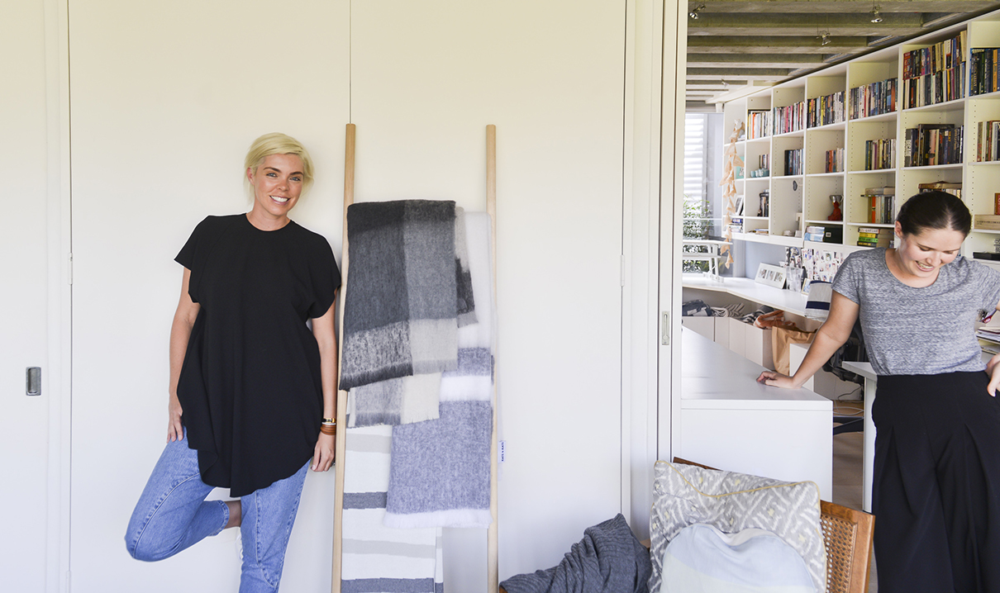

Bowerbirds - The Boweress
Soft furnishings to fall in love with
10 July, 2017
Firstly thank you for welcoming me into your house; it’s always nice to see how homes reflect the person, as they are always such a public/ private mix of things. On one hand they have to be “on display” for friends and colleagues and the other they are extremely private in the aspects that you share with your immediate family.
So I’ve done my research/ stalking and believe you started off in PR, tell me a little bit about your background and how you ended up designing for KATE and KATE?
I grew up in Melbourne and studied PR at Melbourne University before even knowing what it was. I got a job with a Melbourne company ‘Liquid Ideas’ which was an alcohol PR agency that really suited me 😉 (Laughs) I was there for a year until the company split in two. One partner stayed in Melbourne and the other went to Sydney. I was asked to follow him to Sydney in which I thought yeah I could go there in like a year, well it was ‘Bye bye boyfriend, bye bye apartment I just bought’ and within 3 weeks I hit the ground running in Sydney. It was a massive leap in which I had suddenly gone from being a junior to 2IC for a big business with big clients, so a massive opportunity for me. I eventually moved into restaurant PR, basically up until I was in labor (literally) with my second child Helena (laughs)
Being in PR with 2 kids seemed too difficult at the time, on top of some health issues which left me bed ridden for a couple of months. I became bored and was thinking of business of ideas and decided to go to a sourcing fair with a friend. My sister in law, now business partner Kate came along too. My friend was running late so we had a look around, awful fair but one amazing stall with blankets, we got speaking with the owners about production of making up some designs if we decided to do it. My friend eventually turned up to which I informed her ‘yeah we’re not doing a business anymore’ (laughs)
In PR you’re generally behind the scenes whereas now you are the face for your brand and creativity,how has this been different for you?
I was very conscious of this especially at the start when you’re trying to get your message out there. Obviously I’m doing the PR but I was never too serious about it. I think I found it really strange at the start because yeah in PR you are behind the scenes and you’re not really accountable to anyone publicly only your clients. . That was the strangest thing for Kate and I in that we would create something and people would be like that’s’ amazing or that’s really shit or we like it but it doesn’t sell or we like it can we have another hundred. That was really confronting for me. It was definitely weird.
Kate and Kate is obviously a duo, who is the other Kate and how did you guys form a partnership?
Kate is my sister in law. We have always had a great friendship and were kind of looking for new things at the same time. She has a fashion background and did the wardrobe for ‘neighbours’ for a couple of years. Our backgrounds make for a good mix.
Take us through the design process, how does a blanket come to fruition? Is it the process or product that drives you?
We generally draw from our inspiration, take photos of things, and make a pin board… It’s not like; ok we are doing ‘palm springs’ this season’ (laughs) it comes a lot more organically. We go from our pinterest boards, which turn, into mood boards. Both Kate and I sketch stuff (badly) (laughs) then we hand over our stuff to a girl we have who puts it into illustrator. We then get to play around with her and refine the design a little bit more like ‘move that line, make that circle bigger’.
Favourite Kate and Kate item?
Im usually all about grey…but I have my eye on the Helena alpaca blanket for this winter. Its all pink, fairy flossy goodness…(put in link to blanket)
Moving along to interiors and spaces…Being a mother you would know this, I think that kids use their imagination to create a space to withdraw in; somehow they will always find a space that’s theirs.Did you have a bowery growing up, a consistent place/ space throughout your life?
I always remember making cubby houses but I do feel like my bedroom, even when I was really young was my bowery. I would rearrange all my books or be working on my shadow boxes (laughs) I still have them all at my mum and dad’s house!
I used to do my whole wall in Dolly magazine pictures…I was obsessed with Erica Baxter who is now Erica Packer you know pictures of people having amazing lives etc.
I think finding this space becomes harder to find as we get older… Do you think the idea of a bower room is a necessity for the modern woman?
Yes I do, I just think it’s a much more moveable place now. Especially once you have children. When I was thinking about, where is that place for me…I thought it moves but I think that’s the great thing about it. Most of our house is set up so that it can be an interchangeable environment. The room we’re in now is a cross between office/ living space and showroom. 50% of the time this table will have arts and crafts stuff all over it but then I can switch it to be an adult zone.
Off our bedroom we have a dressing room, half of the time though that’s a thoroughfare for the kids and it’s just so nice, I can just look at my clothes and do all of that type stuff. So I would love to say that it’s not 1 spot but as I just find that the kids infiltrate wherever I am.
Obviously a home can be a bower room and I could definitely see this space being my kind of retreat. Tell us a little about the place, how long have you lived here, do you know anything about the history of the home?
We’ve been here for 4 and half years and it was built about 10 years before that. An architect who owned it built it and he ran his architectural business out of this space so when we were looking, I didn’t have Kate and Kate although Tony was writing a lot at the time and needed an office. So I was like ‘babe this is amazing for you…cut to 4 years later where I’m like ‘get out of my office’ (laughs) Tony has a little seat at the end of the desk (laughs) but seriously it’s mostly Kate and Kate now. He does disappear a lot up here to watch sport though for his work so it’s working well for both of us.
It’s very multi functional!
Yeah it is and it’s good in that I can work and set the kids up doing something. I like that flexibility. The house initially grabbed us because it had so many different areas. We converted the attic into 2 kids bedrooms, then we have office, master bedroom across there. Kitchen, dining and living is downstairs and then underneath there’s powder room, spare room, ensuite, 2 car garage. I think because of how the way our family is, Tony has 2 older daughters who don’t live with us, the flexibility was really important. It also has enough outdoor space yet not too much that we have to mow a lawn.
Does this space change to due to the time of day? I feel that rooms/ spaces can have different feelings depending on the time…? For e.g. the natural light you get in here how does that affect the deign process to say late night crams.
Oh my god I love that question because I am light obsessed! That’s basically what sold the house especially when the trees have leaves, there’s a really beautiful yellow that shines through.
Our electrician Jeff is here all the time. I set the house every night. I know which lights I want on…like this light here has to go on at 6 o’ clock. It might sound really weird but I love dawn and the morning light but late afternoon light I’m not a fan of, it’s a totally different light but then it goes to like 7 and it’s all good again. I will pre-empt what I want the internal house light to be like.
When looking at bowerys in general, space of any kind, what is more important to you Form/ aesthetic or function?
Although form and esthetic are always important- and what will draw you to a space- functionality must play a part.
I understand how tricky it can be to keep order and function in a space full of children.How do you create a functioning environment with children in it?
I like to create different zones with lots of storage. I’ve never had any issues with the kids stuff being out, played with and enjoyed…but have always taken great pleasure in being able to ‘pack away’ at the end of the day to create a more adult zone. I also think decluttering is so important and to do it as often as you can. Items that aren’t used, by you, your partner or your kids, can be moved on…keep things edited and the home will function more smoothly.
List 5 items that are essential to your bowery
- I clearly love having blankets around. I always have one on the back of my chair. I currently have an alpaca one which is super nice. I need to have products around as I have a lot of stylists come and borrow things.
- I’ve got to have photos of the kids. I love having them up.
- Whatever is catching my eye or inspiring me at the time. That is forever evolving and changing a lot.
Top 5 female influencers?
- I’m podcast obsessed at the moment
- I’m really inspired by females who are either running their own business or in a creative field.
- I love stylists, I love Meghan Morton and I think Simone Hague is amazing! Whenever I work with them I’m like ‘do you want a coffee’ (laughs)
- We just did life n style trade show and there’s so many women running business and they’re small to medium business, not CEO’s of massive companies. People like Uashmama, or Blacklist, Sagitine, Sage and Claire, we’re all creative but then there is a business brand behind it, which I find inspiring.
- I love that we’re all kind of hustlers! 9laughs)
- My business partner is so amazing! I’m like fireworks, anger and excitement and she is so calm and centered.
Life Mantra?
I really don’t want to say ‘go for it’ but you just have to keep moving forward and jump in to whatever you want to do. You have to back yourself; unless you’ll never do anything cool. I’ve been listening to Elizabeth Gilbert a lot on podcasts and she ‘s like you have to find something that fulfills you.
Last country visited?
India and Singapore.
Last lifestyle item you bought?
It was a tray from ‘Hay’ they have a store on Crown Street in Surry Hills. I initially went in to buy their coat hangers, they have amazing coat hangers, but they’re like 6 for $80 and I wanted to do my whole wardrobe. So I was speaking to a friend and asked “would I be totally crazy if I spent $2000 on coat hangers?” so I bought a tray, it was $40!
Twitter or Instagram?
Facebook or Pinterest?
Favourite word?
Oh god… um
Most used word?
It would definitely be F@#*! It would probably be ‘like’ It’s like I’m 17 years old, everything is ‘like’
Country or City?
City
Surf or Snow?
Definitely Surf
Bath or shower?
Definitely Shower. I’m like a 45-minute shower kind of girl but that’s where everything happens. I will literally sit in the shower; our water bill is out of control because our kids are like that as well.
Tea or Coffee?
Tea, don’t drink coffee.
What’s something you’re looking forward to this year?
I am looking forward to better health and to changes happening within Kate and Kate. We will be taking a slightly different approach over the next 6 to 12 months. It will be more about setting our own timeline for things rather than what the industry dictates with a few exciting upcoming collaborations.
Shop Kate and Kate
Photography by Mark Sherborne at ‘MJS Pictures‘ at Kate’ residential home in Sydney’s Eastern suburbs.
